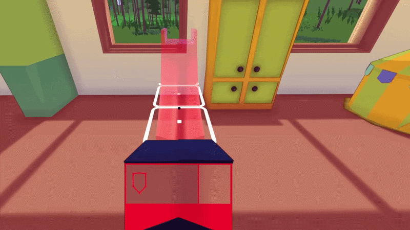
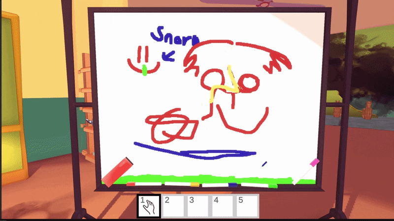

I Unplugged the Kids would be the my second project at Studio Downstairs. The game would be a silly simulation game with a lot of physics and fun interactions. The project was put on hold because we couldn't finish it without funding.
Release date: Not Released
Steam (PC)
Role: Programmer & Designer
Time frame: On Hold
Team size: 4 devs
Unity (C#)
- Networking
- Building system
- AI behaviours
- Interactive gameplay
This project came with a few new challenges when it came to networking that "Find or be Found" did not have. One of them being prediction. I needed to understand Replicate and Reconcile that Fishnet was using and then layer try to predict Unity's physics with it. Fixing "normal" physics object that just needs to interact with the physics system was not hard since there was a build in system for that. The problem was when more complex physics objects needed to be predicted.
The baby bots is by far the most complext physics object in the game, since it needed ragdoll support which lead to a complex structure of colliders. You can also pick them up and throw them. This meant that I needed to create a more custom solution, this was a bigger obsticle that I imagined.
- Ragdoll
- Prediction
- AI pathfinding
The game features a dynamic building system that allows players to construct and modify their environment in real time. I chose a grid-based approach for its simplicity and flexibility. The grid can be adjusted both in cell size and in total dimensions, allowing it to scale to different level layouts.
The system supports arbitrary shapes, including concave and disconnected structures, by requiring each buildable object to manually define the set of grid cells it occupies. While this provides a high degree of control, it is also the system's main limitation, as it makes implementing a large number of buildable objects time consuming.

When validating placement, I check each grid cell the object intends to occupy to determine whether another object is already present. However, this is not always enough on its own. I also perform a raycast collision check to account for objects that is not part of the building system, such as the player or baby bots.
The system also includes several polish features, such as smooth transitions for both rotation and relocation, as well as a subtle stretch and squash effect when the object is placed. This is complemented by a particle system to enhance the feedback.
In addition, there is a placement preview system that shows a ghosted version of the object before it is built. This preview is rendered by only displaying the object's meshes without actually instantiating the full object, and it uses a separate material that changes color to indicate whether placement is valid or invalid.
I developed a custom texture painting system for the game. It works by using pixel coordinates to modify texture data directly. For each update, I generate a straight line of pixel positions between point A and point B, and then apply a brush shape at each point along that line to expand the painted area. All affected pixels are collected and applied to the texture in a single batch to improve performance.

The system is also well-suited for networking. Only the start point, end point, and a color index need to be sent to the client, which can then reconstruct the exact same brush stroke locally. This keeps bandwidth usage very low, since only a few integer-based values are transmitted.
Eventhough the project got put on hold, I learned a lot during the development. The biggest learning was the big challenge of physics based networking that is predicted. Despite it not being 100% solved, I still learned a lot about netwokring and the network solution.